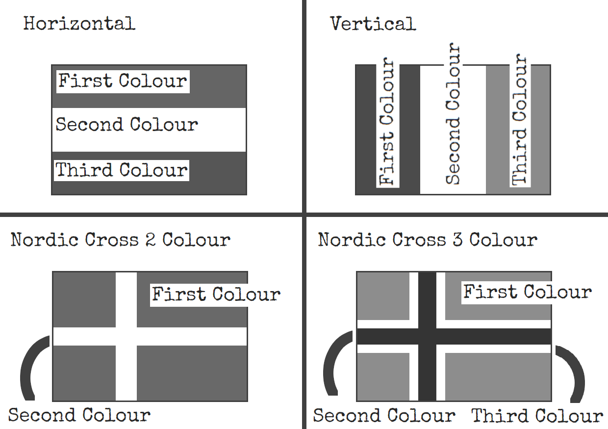

On the Subject of Vex
senegallllll (weird, 2024)
Following a long break, the flagpole shows 3 colours in order.
Paint the flag correctly to solve the module.
Note: Duplicate colours are not allowed. See “Colour Transposing”.
Available colours: Red, Orange, Yellow, Green, Blue, Aqua, White and Black.
Submission: If the painted flag
- exists in the Country Table below: submit when timer has “Submit” digit in any position
- does not exist: submit when timer has last digit of serial number in any position
Strike: Submitting a wrong flag or submitting at the wrong moment
